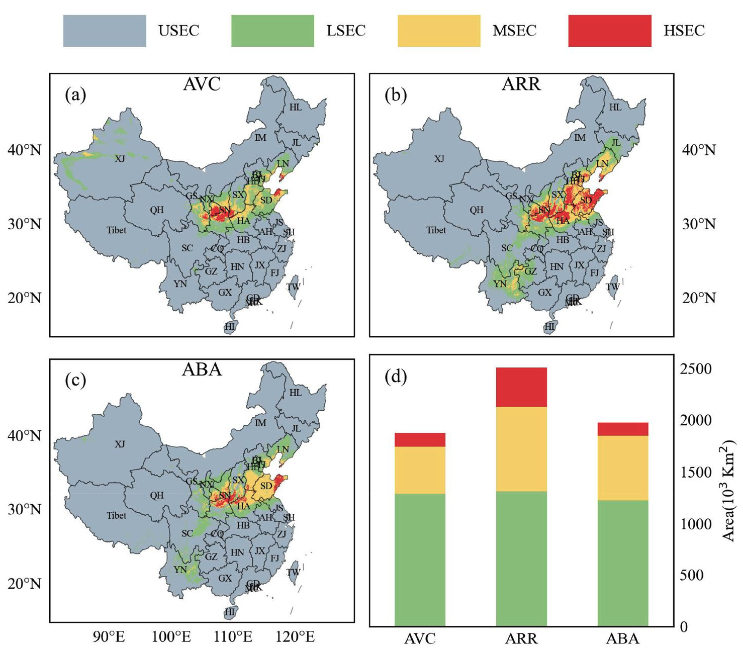
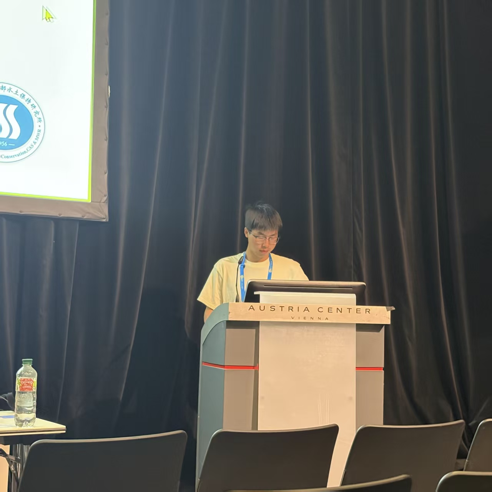

Latest
Recent Updates
2026
1 update
Pinned
Water-Saving Irrigation Strategy for Cotton in Xinjiang Published in European Journal of Agronomy
Our study evaluates a soil-moisture-threshold irrigation strategy for cotton in Xinjiang and quantifies its water-saving and economic benefits under climate change.
2025
3 updates
Apple Disease Suitability Study Published in Journal of Phytopathology
This paper compares five species-distribution models to map the spatial suitability of three major apple diseases across China.
Presented an Oral Report at the EGU General Assembly 2025
Presented current research at the EGU General Assembly 2025 in Vienna, engaging with the international Earth and geoscience community.
Climate-Driven Apple Disease Suitability Study Published in Agricultural and Forest Meteorology
The study projects climate-driven shifts in suitable areas for Alternaria leaf blotch on apples across China and evaluates uncertainty across scenarios.